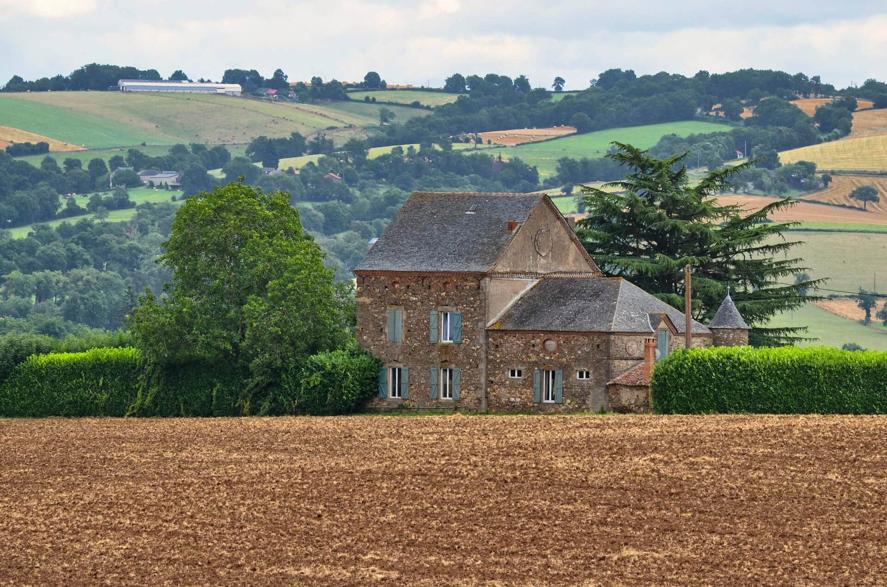
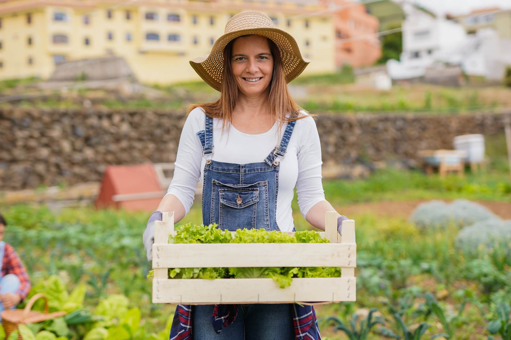

Des légumes frais, locaux et de saison
Vente directe à la ferme chaque mercredi et samedi
Bienvenue à la Ferme des Amandiers
Installée depuis 2015, Sandrine cultive avec passion une grande variété de légumes de saison en agriculture raisonnée. Chaque semaine, elle propose ses récoltes fraîches à la vente directe, en drive à la ferme, chaque mercredi et samedi.
Le site vous permet désormais de consulter les paniers disponibles avant de vous déplacer, et de découvrir l’univers de la ferme : ses méthodes de culture, ses valeurs, et les engagements de Sandrine pour une alimentation plus saine et locale.


À propos de Sandrine
Sandrine est une maraîchère passionnée par la terre et les relations humaines. Engagée pour une agriculture raisonnée, elle met un point d’honneur à cultiver des légumes de qualité tout en respectant les rythmes de la nature.
Proche de sa clientèle, elle aime échanger, conseiller et partager des recettes autour des produits de saison. Sa ferme est un lieu de vie, de rencontre, et de gourmandise.
Nos valeurs
Saisonnalité
Nous ne vendons que des produits cultivés à maturité, respectant les saisons.
Transparence
Vous savez d’où viennent vos produits et comment ils sont cultivés.
Circuit court
Pas d’intermédiaires : directement du champ à votre panier.
Engagement local
Nous participons activement à la vie du territoire et soutenons l’agriculture locale.
Comment ça marche ?
1. Consultez les paniers
Chaque mardi et vendredi, les paniers disponibles sont mis à jour sur le site.
2. Venez au drive
Rendez-vous à la ferme le mercredi ou le samedi pour récupérer vos produits.
3. Profitez des saveurs locales
Savourez des légumes cultivés avec soin, à deux pas de chez vous.